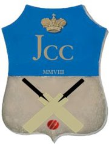

Welcome to JYVÄSKYLÄ CRICKET CLUB

A Brief History
The City of Jyväskylä had never seen cricket before September 2008. That's when an amazing event transpired. That October, Ahmer Iqubal and Venkatesan (with the keen support of Jari Schabel) initiated a weekly indoor cricket session for other cricket enthusiasts.
During the winter, the runs kept piling up and by February 2009, the club's first executive committee was formed. The club's eleven founding members made history on 3 June 2009, the day when the Jyväskylä Cricket Club ry (JCC) officially came into existence as a registered Finnish association.
The club's first ever outdoor match (25-overs) was played in Tampere against TRE CC on 30 May 2010 at Messukylä. JCC hosted their first home series, two T20 friendly matches, also against TRE CC on 25 July at their home ground in Keltinmäki.